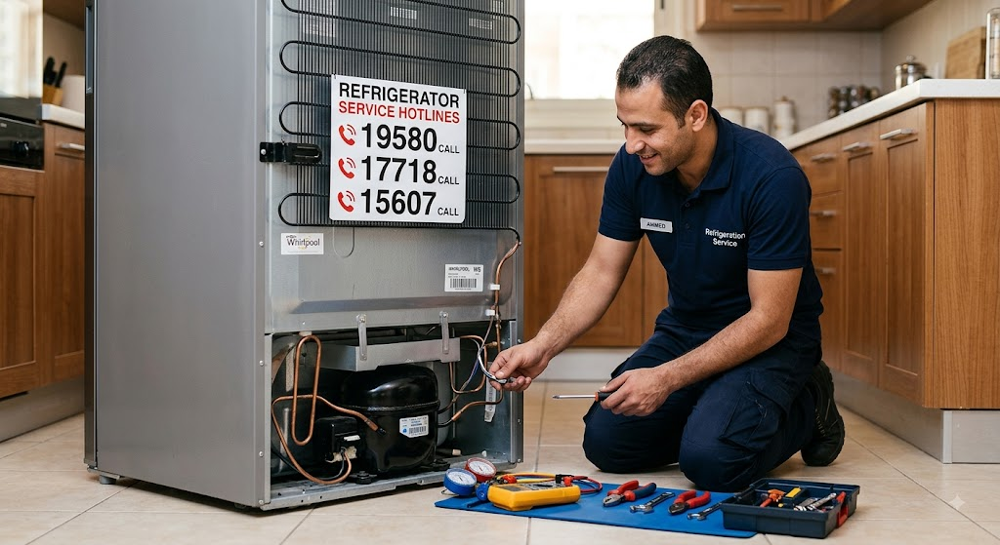

أفضلية الاتصال على رقم صيانة الثلاجات بالمركز المعتمد
الجودة ثم الجودة إنها الكلمة الرئيسية للعمل بالشركة مع التشديد على أهمية خفض تكلفة الإصلاح؛ هكذا هو النهج المعروف والمتتبع لكل العاملين بـ المركز المعتمد لصيانة الثلاجات بمصر. لهذا تجد لدينا آلاف العملاء بمختلف أنحاء مصر، بالمدن والأحياء والمناطق يتعاملون معنا بمنتهى الثقة والإريحية. انضم لنا الآن وكن ضمن عملائنا المميزين وثق تمام الثقة بأن جهازك سوف يعمل بكامل الكفاءة التشغيلية المعروفة عن ثلاجتك قبل التعطل.
إن اختيارك الاتصال برقم المركز المعتمد لإصلاح ثلاجات التجميد يُعتبر الاختيار الأفضل لجهازك لأننا نوفر لك معدات كشف الأعطال الحديثة الفاحصة للأعطال بمنتهى الدقة. وبالتالي لن يكون هناك أي احتمال لتغيير مكون يعمل بشكل سليم بمكون آخر جديد، مما سيكون له الأثر في تقليل نفقات صيانة ثلاجة المنزل.
هل يوجد بالمركز ميزة استبدال الثلاجة القديمة؟
نعم، لدينا إمكانية الاستبدال للثلاجات؛ إنها خدمة جديدة نقوم بها من أجل راحة عملائنا. لقد اخترنا بعض طرازات ثلاجات التبريد المستوردة وتم إتاحتها للاستبدال مع التسعير العادل للثلاجة القديمة. كما نضيف بأن قسم الاستبدال متاح به كل الأجهزة الكهربائية مثل الثلاجة، غسالات الأطباق، الميكروويف، تكييف الهواء، ديب فريزر، البوتاجازات، وافران بلت إن، ويمكن لمالك المنتج استبداله بمنتج آخر أو بصيانة الثلاجات المنزلية.
خطوات الفحص الدقيقة بمركز صيانة الثلاجات المعتمد
- هي عدة خطوات بسيطة ومُيسرة تحصلون بعدها على أفضل خدمة إصلاح لثلاجات المنزل بجمهورية مصر العربية بحد أقصى 48 ساعة للمدن البعيدة عن العاصمة. نجتهد طيلة الوقت ونبذل قصارى جهدنا لمساعدة مقتني ثلاجات التبريد المنزلية والمكتبية.
- في البداية يتم فحص الثلاجة لمعرفة نوع الخلل، وهذا الفحص دائماً يكون بسعر ثابت من المركز الرئيسي لصيانة الثلاجة بالقاهرة أو بالإسكندرية ومختلف المحافظات.
- بعد الفحص وتحديد العطل سوف يقوم فني صيانة الثلاجات بعرض تكاليف الإصلاح للمكونات المراد استبدالها لتشغيل الثلاجة، وبناءً على موافقة العميل سوف يتم الإصلاح فوراً أو الاكتفاء بدفع رسوم الزيارة والكشف الفني للثلاجة.
- غالبية أعطال صيانة الثلاجة يستغرق إصلاحها بعض الفحص الفني الدقيق قرابة الساعة وبضع دقائق (ربما بعض الأعطال تتخطي 120 دقيقة بقليل)، وهذا هو المتعارف عليه بالمركز. ولكن هناك بعض الأعطال قد يضطر الفني لإصلاحها لنقلها لأقرب فرع لمركز صيانة الثلاجات التابع لها.
- بعد إتمام صيانة الثلاجة يُسلم للعميل شهادة ضمان معتمدة من الفرع تحتوي على كل التفاصيل (قيمة المصنعية، الأجزاء المستبدلة، ورش إصلاح الثلاجات، ومدة الضمان المتاحة على القطعة المستبدلة).
أهمية صيانة الثلاجة بقطع الغيار الأصلية فقط
عندما تتم صيانة ثلاجات بقطع الغيار الأصلية بالطبع سوف تكون أفضل واضمن للثلاجة وللمستخدم، وهذا ما يؤكد عليه المركز المعتمد بمصر؛ ببدء توافر المكون الأصلي والمهندس المحترف بـ أعطال ثلاجات نوفروست والدوفروست مروراً بخدمة العملاء المتخصصة للإجابة على مختلف الاستفسارات وأسئلة العملاء.
مراكز صيانة الثلاجات المتخصصة
نعرف بأن هناك الكثير من المراكز المتخصصة لصيانة ثلاجات بمصر، لكنك معنا سوف تحصل على خدمة ذات جودة بدون مبالغة بتكاليف الإصلاح، كما أنه لدينا سيارات الخدمة وفروع صيانة تغطي اغلب المحافظات (القاهرة، الجيزة، الإسكندرية، وباقي مدن الوجه البحري والوجه القبلي) سريعة باتصالك بأرقام الخدمة المتاحة: 19580 - 17718 - 15607.
نوفر خدمة صيانة ثلاجات دوبلكس وأيضاً إصلاح ثلاجة نوفروست، تصليح ثلاجات دوفروست (2 باب افقي، 14 قدم، تصليح ثلاجات 16 قدم، 18 قدم، إصلاح ثلاجة 22 قدم، 24 قدم، و26 قدم) قسم خاص لديب فريزر.
قطع الغيار الأصلية المتاحة لجميع الماركات:
يتواجد لدينا كافة قطع الغيار الأصلية للثلاجات الكوري، الأمريكي، الإيطالي، الألماني، التركي، الفرنسي، الثلاجات الصينية، وصيانة وقطع غيار الثلاجات المحلية إصلاح بالضمان المعتمد.
ماذا نفعل عند ظهور خلل بالثلاجة؟
سرعة الاتصال بـ رقم صيانة ثلاجات المعتمد (19580 / 17718 / 15607) عند الضرورة، لأن معظم حالات الأعطال بالثلاجة تحدث بالتدريج.
مع حدوث بعض المؤشرات الملحوظة والدالة على وجود عطل بالثلاجة أثناء التشغيل أو بعده (سواء ضعف التبريد بالكابينة أو عدم التجميد بالفريزر)، لذلك نرجو منك إذا وجدت ضعف تدريجي أو لاحظت بأن مخزون الأطعمة المجمدة بالثلاجة بدأ بالذوبان:
- علیکی بإيقاف الثلاجة فوراً والتواصل مع مركز صيانة ثلاجات المعتمد لأخذ الرأي والمشورة حتي لا يتفاقم العطل ومن ثم يؤدي لتلف أجزاء أخرى وتزايد تكلفة صيانة الجهاز النهائية.
- التحدث مع الفني لحجز ميعاد لصيانة الثلاجة من أرقام الخطوط الساخنة للمركز المعتمد: 19580 - 17718 - 15607.
أهمية ترتيب الثلاجة من الداخل لسهولة تدفق الهواء
- لا يجب الإفراط في تعبئة الكابينة بالمأكولات، فذلك يعرض الأطعمة للتلف وكذلك موتور الثلاجة للإجهاد الزائد بالإضافة لارتفاع معدل الاستهلاك الكهربي وبالتبعية فاتورة المحاسبة.
- ترتيب أكياس الطعام على الأرفف يسهل تدفق الهواء المبرد لمختلف أنحاء الثلاجة ويقلل وقت عمل الكمبريسور ويحفظ الأطعمة جميعها بنفس مستوى التبريد.
- ضبط منظم درجات التبريد (الترموستات) على درجة من 2 إلى 3 بفصل الشتاء ومن 4 إلى 6 بفصل الصيف، من شأنه تخفيض استهلاك الطاقة وتوازن التشغيل والعمر الافتراضي لثلاجات التبريد المنزلية.
- توفير مبرد مياه أثناء فترة الصيف سوف يقلل ضغط استخدام الثلاجة ويبقى الهواء المبرد بالداخل أطول وقت ممكن وذلك له اثر جيد.
- استدعاء فني لتنظيف دائرة تصريف مياه الفريزر المذابة حتى لا تتكون كميات ثلج بأرضية الفريزر أو حول المروحة.

صيانة وإصلاح الثلاجات المنزلية
تُعد الثلاجة من أهم الأجهزة الكهربائية في المنزل، والحفاظ على كفاءتها يتطلب دراية تامة بالأعطال الشائعة وكيفية التعامل معها لتجنب تلف الأطعمة أو إجهاد المحرك (الكومبريسور).
أبرز الأعطال الشائعة
ضعف التبريد الكلي، انسداد أنبوب تصريف المياه، تراكم الثلج في ثلاجات النوفروست، وارتفاع صوت المحرك نتيجة تلف القواعد أو مروحة الفريزر.
نصائح الحفاظ على الثلاجة
ترك مسافة تهوية خلف الجهاز (10-15 سم)، تنظيف كاوتش الباب بالماء الدافئ لمنع تسريب الهواء، وعدم تكديس الأطعمة أمام فتحات التهوئة الداخلية.
الخطوط الساخنة الفورية
عنوان المركز المعتمد ومواعيد العمل
مواعيد العمل الرسمية
تعمل فروع المركز المعتمد لصيانة الثلاجات بمصر بمواعيد محددة من التاسعة صباحاً إلى العاشرة مساءً بكافة المدن والمحافظات.
عنوان المركز الرئيسي
جمهورية مصر العربية - الفروع متوفرة بالقاهرة، الجيزة، الإسكندرية， وجميع محافظات الوجه البحري والقبلي.